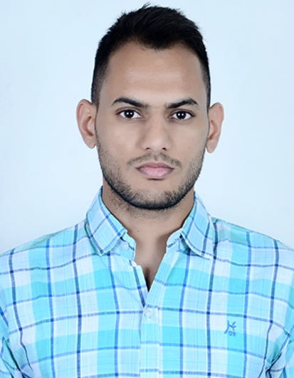

Chetan Anchara

Objective
Seeking a challenging position in a reputed organization amidst broader options of growth in technical and business knowledge.
Education
- Graduation : B.Tech (CSE)- IIIT Kalyani (2014-2018), 7.36 CGPA
- Senior Secondary (12th) : Prince School,Sikar , Rajasthan (2013), 87.40%
- Secondary (10th) : Sharda School, Nagaur, Rajasthan (2010), 91,17%
Internship
Project : Currency Recognition
Indian Institute of Technology | Kharagpur
Detecting counterfeit cash by extracting generic properties from the image of currency note.
Built the CNN Architecture to compare the features of real currency with fake currency as classification problem
Data preprocessing involved data augmentation using transformation, rotation, scaling, bifurcation etc.
Skills
- Programming: C, Python,Core Java, Arduino Programming
- Web Scripts: HTML5, CSS3, JavaScript, React JS
- DBMS: MySQL
- OS: Windows, Linux (Ubuntu), Mac
- Extra: Git, GitHub,figma, MS Word, PowerPoint, Excel
Training & Certification
- Training in C & C++ Programming from Samyak IT Solution Pvt. Ltd.
- Research Paper on ‘Currency Recognition’ in IIT Kharagpur
ACTIVITIES
- Thesis on Arduino Weather Station in IIIT, Kalyani
- Workshop on ‘All India Robotics Challenge’ conducted by TechieNest under nVision IIT Hyderabad
- Participated in All India Marathon Tournament conducted by IIIT Kanchipuram
Others